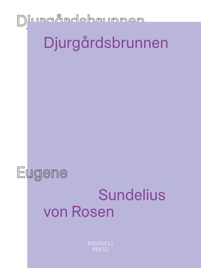

Vaknar upp en fredag och brinner
Antologi
Ludvig Johansson
Dimen Abdulla
Hanna Rajs Lara
Richard Leppänen
Christofer Degrér
Giovanna Olmos
Henry Song
Ali Derwish
Meron Daniel

STRÖM
My Roman Fagerlind
himlen simmar i blått / en hög byggnad / med överkropp av sol / vrider sig mot hudson / armbågarna mot marken / ett
huvud bort / ett huvud av cement / mina fötter kliar / mot resten av min kropp / en mörk våg / mot allt det ljusa
STRÖM utforskar förträngning och minne och utgörs av fragmentariska medvetandeströmmar som flätas samman. Det är ett
skrivande som undersöker hur perceptionen påverkas och förändras i skuggan av våld. Det är en text som är ”ena sidans
minnen/andra sidans förluster”.
My Roman Fagerlind, född 1989, är poet och textbaserad konstnär. Hennes språkliga praktik tar sig uttryck i både text,
film och objekt för utställningsrum.

om vi
Signe N Hammar
ni som saknar era ansikten
för att jag tagit dem
är kvar
i mig
Vad möjliggör ett jag? När blir “vi” ett “de”? Signe N. Hammars diktsamling står utanför landskapet, och hela världen är
regn, utan nederbörd.
Signe N. Hammar, född 1980, är verksam som poet och trädgårdsmästare. Hon debuterade år 2013 med diktsamlingen
Bladtätnad. Om vi är hennes andra bok.

Djurgårdsbrunnen
Eugene Sundelius von Rosen
kom
släng inte gitarren jo förresten släng in den djupt in i filmen,
slå mig inte med filmen fjättra istället den förstnämnde,
så att rabdor med matlådan kan komma och låsa in dig
Eugene Sundelius von Rosen är född 1991. Hans texter utgår ofta från textimprovisationer och rör sig mellan det felhörda
och det felsagda. Han har också gjort performancekonst och skrivit teaterstycken.
Djurgårdsbrunnen är en dikt skriven direkt ur badrockens charm. Här finns benjamin, gabriel och mikael som matar på med
saltet, här finns emelies tröja, obarmhärtiga moduler i tapeten och sist men inte minst rabdor som smyger omkring med
matlådor i mörkret och predikar sin elementära lära. En dikt om hundöron, divor och tempelriddare.

tider träck 2
Filip Lindberg
dikten det är den som är förskjutningen
Med samplingar och ett intensivt prövande språk förs läsaren in i en rytmisk diktcykel som vill skriva fram arbetets
rörelser. tider träck 2 är en dikt om tid, glömska och repetition.
Filip Lindberg, född 1990, är poet, kritiker och medlem i redaktionen för litteraturtidskriften tydningen.